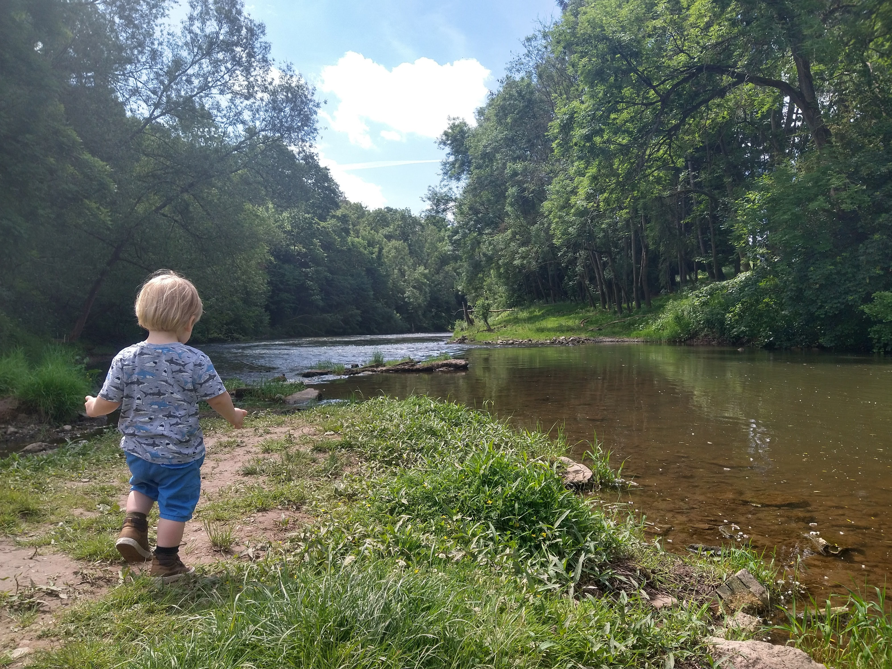

Hello I'm Luke Jolliffe

My Communication Preferences are:
Slack

Gmail

Conditions I like to work in
Plenty of coffee available
Headphones on

Things I love
Learning about accessibility
Challenging myself

Things I struggle with
Childcare - Mornings can be hectic with my child
Starting conversations with new people
Making things look pretty
